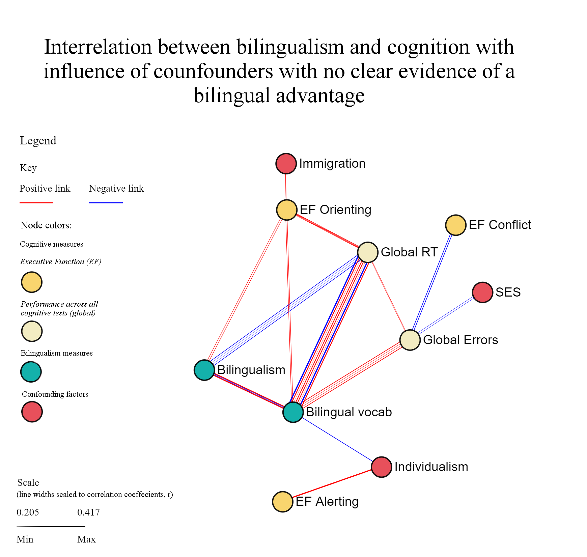
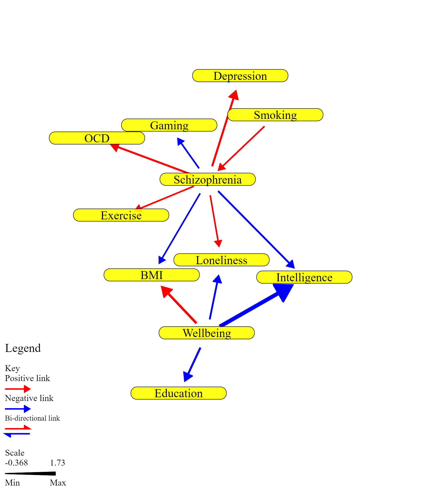
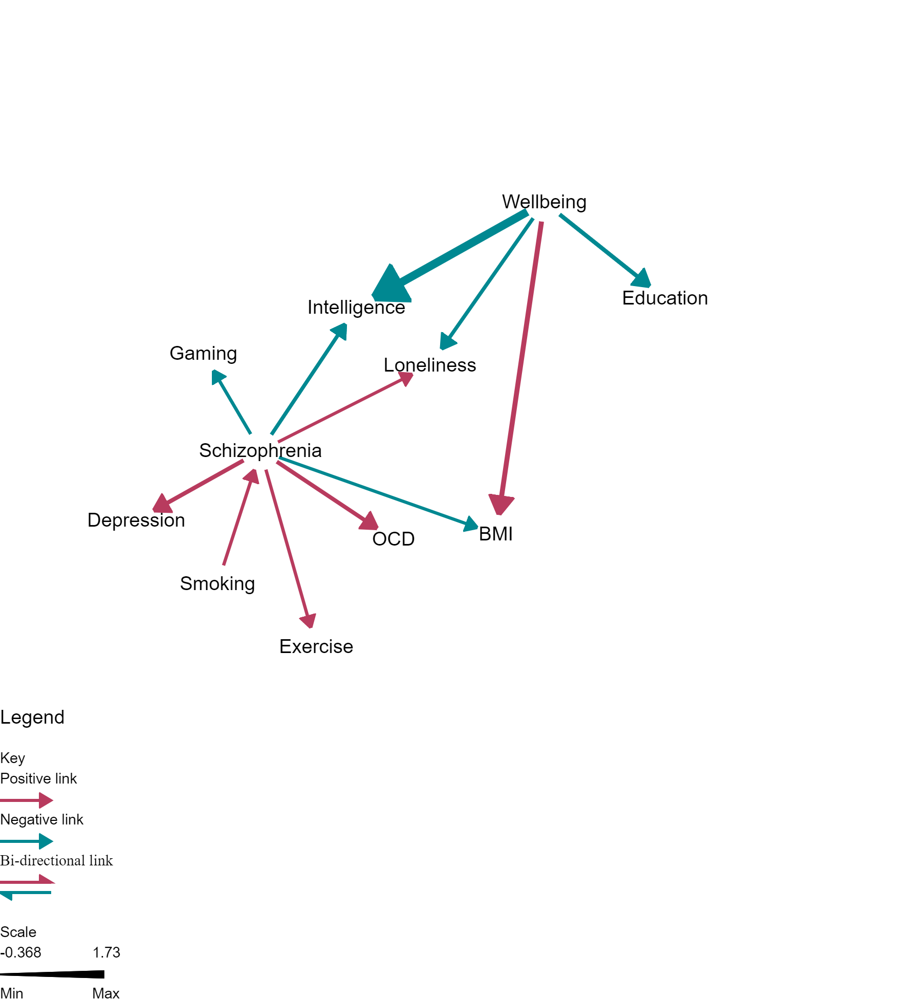

External integration
MiRANA was designed to be used in external data visualisation applications. The underlying framework is highly customisable and has support for interactive visualisation. It is pictured here powering a data visualisation game.

Observational data
An arrangement of observational estimates, correlations, between factors related to bilingualism and cognition.

Academic style preset
A style preset with a DAG-like appearance and journal compliant font. Style presets are available to make formatting MiRANA visualisations even faster.

Clinical style preset
A style preset with a focussed design and clinical color scheme. This is another available in-tool style preset.